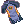
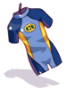
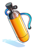
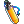
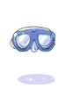
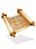
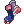
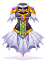

Summer Tablet
The Summer Tablet is a device given to everyone who attends the Summer Festival.
It is designed to guide you around the Island in case you get lost. You can also use it to find shops, and even join and leave multiplayer game queues!
To use the Summer Tablet simply double click the item in your inventory, then select the option you want!
Return to Gathering Hub
Being self explanatory, it brings you to the Summer Festival entrance where the Portals for each area are located.
Festival Apparel
Festival Apparel opens up three options, two of which are for upgrading your Summer equipment, and the other opens an outfit shop.
Footwear
This option opens up Sunny Feet Inc. who can provide you with  Festival Sandals for
Festival Sandals for  50 Summer Festival Coins.
50 Summer Festival Coins.
Festival Sandals will increase your movement speed on Summer and Rock Island.
You can upgrade your sandals further by paying additional amounts of items.
| Sunny Feet Inc.'s Footwear | ||
|---|---|---|
| Image | Name | Price |
| Festival Sandals
|
||

|
Vacation Sandals |
100 |
| Running Shoes |
1000 | |
| Sea Master's Booties |
Must have  Wetsuit fully enchanted (Does not Consume) | |


Wetsuits
This opens up Jason's shop, where he helps you upgrade your Wetsuit to dive deeper into the King's Grotto!
| Jason's Wetsuit Upgrades | ||
|---|---|---|
| Image | Name | Price |
|  | Wetsuit | 5 Summer Festival Coins
|
|  |  Air Tank | |
|  | Diving Goggles | |
|  |  Waterproof Map Waterproof Map
|
|

|
 Dive Boots | |
Outfits
The Summer Festival has some exlusive outfits that can only be bought here! Better buy them before Summer is over!
| Summer Outfits Catalog | ||
|---|---|---|
| Image | Name | Price |
| Cool Summer Outfit | ||
 Aegir Helm Aegir Helm
|
||
|  | Aegir Armor | |
| Aegir Manteau | ||
| Aegir Shoes | ||
 Cooler Summer Outfit Cooler Summer Outfit
|
10000 | |
Summer Island Directory
This lets you choose between Shops, Singleplayer Games, Multiplayer Games, and Other. And will reveal their locations on your minimap.
Multiplayer Queue
Enter Multiplayer Queue puts you in the queue to join a random summer game.
While Leave Multiplayer Queue will let you leave that queue.
See Also
| Summer Festival | ||
|---|---|---|
| General | Frying Dutchman • King's Grotto • Summer Concert • Hooligan • Summer Tablet • Festival Hat Recolors • Summer Shops | |
| Games | Multiplayer Games • Singleplayer Games • Arcade Games • Frenzy Mode | |
| Activities | Digging • Fishing Tournament • Summer Foraging • Summer Cooking | |